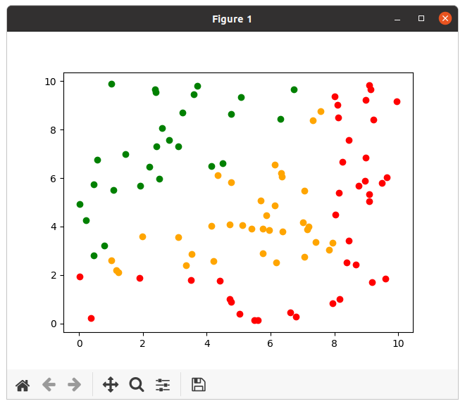
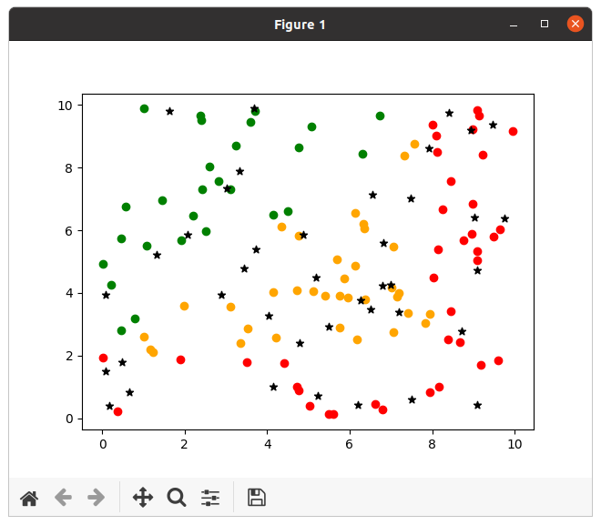
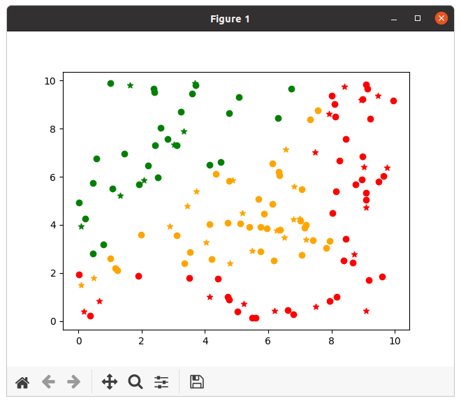

Algorithme des K plus proches voisins
I. Introduction à l’apprentissage, notamment l’apprentissage supervisé
1. Définitions
a. Apprentissage
L'apprentissage (automatique) est un des nombreux domaines d'études de l'Intelligence Artificielle. Il consiste, à partir de données réelles, à établir des "règles" qui permettront de "classer" automatiquement de futures données. On distingue 2 types d'apprentissage :
- l'apprentissage supervisé
- l'apprentissage non supervisé
Dans un processus d'apprentissage, on distingue 2 phases :
- une phase d'apprentissage à proprement parler, pendant laquelle le système exploite des données pré-existantes pour se configurer ;
- une phase d'utilisation, où le système, figé à l'issue de l'étape précédente, est utilisé sur de nouvelles données.
b. Apprentissage supervisé (ou classification)
Dans un processus d'apprentissage supervisé, le but consiste à associer une "classe" à une donnée. Les classes possibles sont connues d'avance. Les données utilisées dans la phase d'apprentissage sont des données déjà étiquetées par leur classe.
c. Apprentissage non supervisé (ou clustering)
Dans un processus d'apprentissage non supervisé, le but consiste à regrouper les données d'apprentissage en groupes (ou cluster) de données "proches", puis lors de la phase d'utilisation, à identifier de quel groupe une donnée est la plus proche.
L'apprentissage profond (ou deep learning) rentre dans cette catégorie. Il ne s'agit que d'une toute petite partie du vaste domaine de l'Intelligence Artificielle.
2. Base d’apprentissage : connaître les risques
Un algorithme d'apprentissage de peut apprendre qu'à partir des données qui lui sont fournies lors de la phase d'apprentissage. Si ces données sont fausses, il est évident qu'il apprendra des choses fausses. Mais cela sera aussi le cas si la base d'apprentissage n'est pas représentative de la population potentielle des données. Par ailleurs, un étiquetage erroné des données de la base d'apprentissage produira un apprentissage erroné.
Exemples :
- Un algorithme google confond des noirs et des gorilles ;
- Un algorithme de Microsoft devient raciste.
Mise en garde : Python est riche de bibliothèques fournissant toute sorte d'algorithmes, dont des algorithmes d'apprentissage, et notamment des algorithmes de Deep Learning. Tout un chacun pense donc pouvoir utiliser ces algorithmes pour mettre en place de l'apprentissage, mais les risques sont alors énormes d'arriver à des apprentissages erronés. Par ailleurs, les données nécessitent souvent un pré-traitement pour que l'algorithme fonctionne bien (par exemple, travailler directement sur les pixels d'une image ne donne rien).
II. L’algorithme des K plus proches voisins (KNN) et son paramétrage (choix de k avec validation croisée)
A. Présentation générale
L'algorithme des K plus proches voisins est un algorithme d'apprentissage supervisé. La phase d'apprentissage est réduit à une simple collecte des données. Le principe de cet algorithme est le suivant :
déterminerClasse(d, E): Soient d la donnée à étiqueter et E l'ensemble des données d'apprentissage. On détermine P = ensemble P des k données les plus proches de d. On calcule c = classe majoritaire parmi les données de P. return c
B. Paramétrage
L'algorithme KNN est fonction de deux paramètres :
- la valeur de k ;
- La distance utilisée.
En général, la distance utilisée est la distance Euclidienne. C'est donc uniquement la valeur de k qui est à déterminer. Pour ce faire, on peut utiliser la validation croisée, dont le principe de base est le suivant :
On sépare la base d'apprentissage en 2 tas : 80% des cas sont utilisés pour l'apprentissage, 20% pour la validation. Pour chaque valeur de k, on applique l'algorithme sur les données de l'ensemble de validation et on mesure le taux d'erreurs obtenues. On retient pour k la valeur ayant donné le taux d'erreur le plus faible.
Ce principe de base peut être amélioré pour procéder ainsi :
On sépare la base d'apprentissage en 5 tas "semblables". On procède comme précédemment 5 fois, en utilisant à chaque fois un tas différent comme tas de validation (et en utilisant les 4 autres tas pour l'apprentissage). On garder la valeur de k ayant donné les meilleurs résultats sur l'ensemble.
C. Illustration
Sur le schéma suivant, on représente la classe des points par une couleur. Voici à quoi ressemble la base connue :

On a également un certain nombre de points dont on veut déterminer la classe (étoiles en noir sur l'image suivante) :

L'algorithme des k plus proches voisins donne les résultats suivants :

III. À vous de jouer !
On génère des données (étiquetées et non étiquetées) grâce au code suivant :
from random import random, seed
class Point:
def __init__(self, abscisse, ordonnee, classe="Inconnu"):
self.abscisse = abscisse
self.ordonnee = ordonnee
self.classe = classe
def distanceCarree(self, autre):
return (self.abscisse-autre.abscisse) ** 2 +
(self.ordonnee-autre.ordonnee) ** 2
def __repr__(self):
return "(" + repr(self.abscisse) + "," +
repr(self.ordonnee) + ")[" + self.classe + "]"
def genererPointClasse():
abscisse = random()*10
ordonnee = random()*10
if (abscisse < 8 and ordonnee < 2) or (abscisse >= 8):
classe = "red"
elif ordonnee - 2 <= abscisse:
classe = "orange"
else:
classe = "green"
point = Point(abscisse, ordonnee, classe)
return point
def genererPointNonClasse():
abscisse = random()*10
ordonnee = random()*10
point = Point(abscisse, ordonnee)
return point
def genererBaseConnue(nb):
base = []
for i in range(0,nb):
base.append(genererPointClasse())
return base
#rajouter la ligne suivante pour des cas reproductibles
#seed(0)
baseConnue = genererBaseConnue(100)
baseVerif = genererBaseConnue(20)
classes = ["green", "orange", "red"]
Exercice 1 : Écrire un programme implantant l'algorithme des k plus proches voisins.
#Version peu efficace, mais claire
def associerClasse(baseConnue, classes, pointAClasser, k):
#Pour chaque point connu, on créé un couple (classe, distance)
listeDistances = list(map(lambda x: (x.classe,x.distanceCarree(pointAClasser)), baseConnue))
#print(listeDistances)
#On classe par distance croissante
listeDistances.sort(key=lambda x: x[1])
#print(listeDistances)
#On ne garde que les k premiers
listeDistances = listeDistances[:k]
#print(listeDistances)
#on associe à chaque classe le nombre d'occurrences parmi les k plus proches voisins
occurrences = {classe:len(list(filter(lambda p: p[0] == classe, listeDistances))) for classe in classes}
#print(occurrences)
#On remet ça sous la forme d'une liste de couples pour pouvoir rechercher le max
listeOccurrences = [(classe,occurrences[classe]) for classe in classes]
#Pour trouver le max, on trie et on prend le dernier
listeOccurrences.sort(key=lambda x: x[1])
classePoint = listeOccurrences.pop()[0]
return classePoint
#point = Point(0.5, 2.3)
#classe = associerClasse(baseConnue, classes, point, 5)
#print(classe)
Exercice 2 : Complétez l'algorithme précédent avec une détermination simple de k.
def evaluerK(classes, baseConnue, baseVerif, k):
nbCas = len(baseVerif)
nbErreurs = 0
for point in baseVerif:
classeCalculee = associerClasse(baseConnue, classes, point, k)
if classeCalculee != point.classe:
nbErreurs = nbErreurs + 1
return (nbCas-nbErreurs) / len(baseVerif)
evaluations = [(k, evaluerK(classes, baseConnue, baseVerif, k)) for k in range(2,50)]
evaluations.sort(key=lambda x:x[1])
print(evaluations)
kChoisi = evaluations.pop()[0]
print("On prend k =",kChoisi)
IV. Pour la visualisation graphique
Pour produire les visualisations illustrant l'algorithme affichées plus haut, vous pouvez utiliser le module matplotlib (à installer éventuellement ; pour une installation pip : python -m pip install -U matplotlib.
Ensuite, vous pouvez utiliser matplotlib ainsi :
def genererDonneesInconnues(nb): base = [] for i in range(0,nb): base.append(genererPointNonClasse()) return base
import matplotlib.pyplot as plt for point in baseConnue: plt.scatter(point.abscisse, point.ordonnee, color=point.classe) pointsAClasser = genererDonneesInconnues(40) for point in pointsAClasser: classe_calculee = associerClasse(baseConnue, classes, point, kChoisi) point.classe = classe_calculee for point in pointsAClasser: plt.scatter(point.abscisse, point.ordonnee, color=point.classe, marker="*") plt.show()